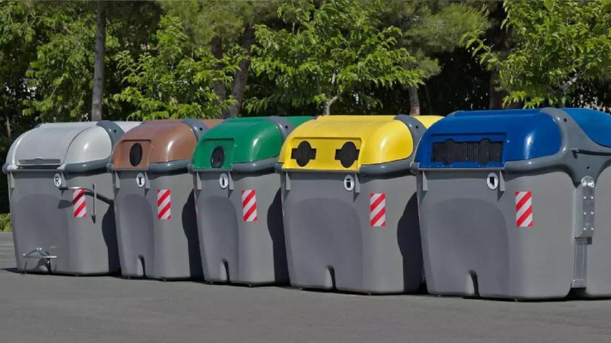
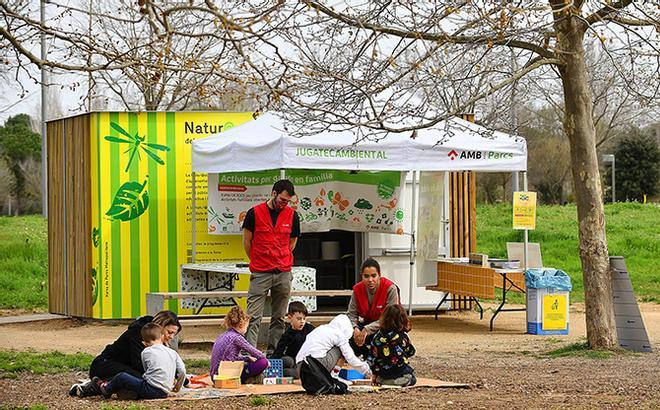
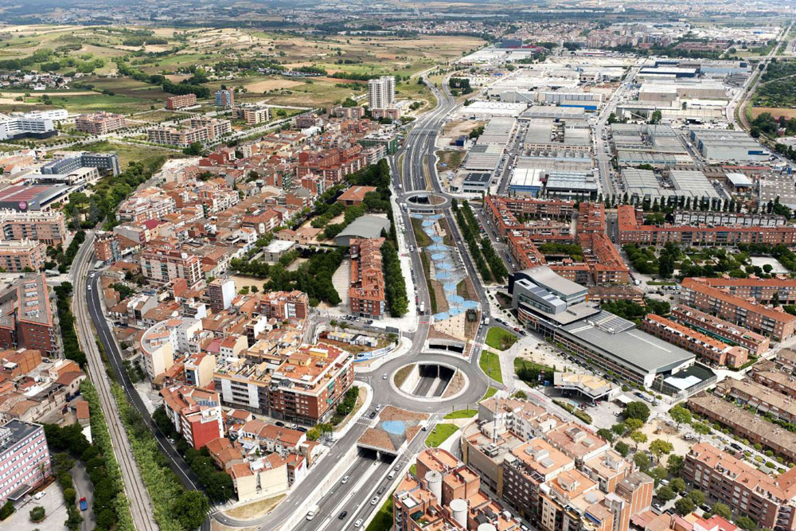
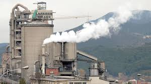

Ayuntamiento de Montcada i Reixac
Ayuntamiento de Montcada i Reixac
Medidas Medioambientales
Ayuntamiento de Montcada i ReixacMedidas Medioambientales
El Ayuntamiento de Montcada i Reixac desarrolla distintas medidas para reducir el impacto ambiental, fomentar la sostenibilidad y mejorar la calidad de vida de la ciudadanía. A continuación se detallan las principales actuaciones.
Se han instalado paneles solares en edificios públicos para reducir el consumo de energía convencional y disminuir las emisiones de gases de efecto invernadero. Además, se promueve el uso de aerogeneradores en espacios comunitarios como parte de la transición hacia energías limpias.

Se han habilitado puntos de reciclaje distribuidos por toda la ciudad para facilitar la separación de papel, plástico, vidrio y residuos electrónicos. Esta medida impulsa la economía circular y reduce la cantidad de residuos enviados a vertederos.
Se desarrollan programas educativos en colegios y talleres abiertos a la comunidad para fomentar la conciencia ecológica, el consumo responsable y el respeto por el entorno.
Se promueve el uso del transporte público y la bicicleta como alternativas al vehículo privado. Se han creado carriles bici y estaciones de recarga para vehículos eléctricos con el objetivo de reducir la contaminación atmosférica.
El Ayuntamiento aplica regulaciones para controlar las emisiones industriales y reducir el impacto ambiental. Se realizan inspecciones periódicas y se impulsan planes de mejora para garantizar una mejor calidad del aire.
